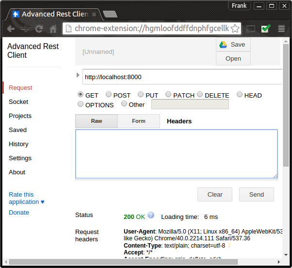

Lab 7: Node and Express 2
In this lab you will add more functionality to the server side scripts. This lab will introduce you to the following: - define a web API for your service - separate routing out into a routing script - do more advanced routing based on the HTTP verb - test your solution with a suitable Rest Client
Set up the Express Application
We will use the 'routing' technique covered in the last lab to map the above HTTP verb and paths
- Create a new project folder called lab7 and do the following
- Just like you did in lab 6, use Node Package Manager (NPM) to create a package.json file in the lab7 folder using
npm initcommand. - Install Express and save the dependency to the package.json be running the following in the lab7 folder:
npm install express --save. (the--saveadds Express dependency to your package.json) - This time we'll also be parsing contact JSON in the HTML. We need the body-parser package for that. Install as follows:
npm install body-parser --save - In the lab7 folder, create a new script called app.js containing the following code:
var express = require('express');
var bodyParser = require('body-parser');
//create an express app
var app = express();
//configure the express app to parse JSON-formatted body
app.use(bodyParser.json());
//add route for the root
app.get('/',function (request, response) {
response.writeHead(200, {"Content-Type": "text/plain"});
response.end("We're up and running!!!");
});
// Listen on port 8000, IP defaults to 127.0.0.1
app.listen(8000)
// Put a friendly message on the terminal
console.log("Server running at http://127.0.0.1:8000/");
- As in the last lab, start the service by running
node app.jsand then check if the Express app is listening on port 8000. This time, however, we will use a "Rest client" to manually test the service. If you are using the Chrome browser, you can use the 'Advanced Rest Client' which is available as a Chrome app. See here for instructions on how to install the app.
Once installed, perform a HTTP GET request on localhost:8000 as shown below. You should get a "200 OK" result if everything is OK. 
Defining the contacts web API
In the last lab we created one simple route:
//add route for /greeting
app.get('/greeting',function (request, response) {
...
});
In this lab, the following list of actions are required for the Contacts API.
- view all contacts
- add a new contact
- delete a contact
- update a contact
We will now map these action to a set of HTTP operations on resources.
| HTTP Verb & Path | Operation Description |
|---|---|
| GET: /api/contacts | return a list of contacts |
| POST: /api/contacts | add a new contact |
| PUT: /api/contacts/:id | update a contact |
| DELETE: /api/contacts/:id | delete a contact |
| We will now use the same approach but use the 'require' functionality to separate out the routing logic from the main app script. |
Implementing Get and Post
- In app.js, update the code to require the routing script and the above routes.
//create routing object
var contact = require('./api/contacts/index');
//Add routes for contacts api
app.get('/api/contacts',contact.index);
app.post('/api/contacts',contact.create);
- Each contact's JSON representation will look like the following:
{id: 'hwX6aOr7', name: "Ellen Bliggs", address: "2 River Road", phone_number: "051-123457"}
We will need to generate a unique id each time a new contact is added. To do this, install the ShortId Module by running the following in the lab7 folder:
npm install shortid --save
- In the lab7 folder create the following folder structure.
- api
|- contacts
To mimic a real database, we'll use a script that exports a hard coded contacts data as a JSON array. Create a new file called datastore.js in the contacts folder and add the following:
exports.contacts = [
{id: 'a4vhAoFG', name: "Joe Bloggs", address: "1 Bank Lane", phone_number: "051-123456 "},
{id: 'hwX6aOr7', name: "Ellen Bliggs", address: "2 River Road", phone_number: "051-123457"}
]
- Create a new script called index.js in the contacts folder. Add the following code to the script.
var datastore = require('./datastore');
var shortId = require('shortid');
// Get list of contacts
exports.index = function(req, res) {
return res.json(200, datastore.contacts);
} ;
// Creates a new contact in datastore.
exports.create = function(req, res) {
var contact = {
id: shortId.generate(),
name: req.body.name,
address: req.body.address,
phone_number: req.body.phone_number
};
datastore.contacts.push(contact)
return res.json(201, contact);
};
In the above code, we require the datastore script that exports the JSON array of contacts. The index function just returns all the contacts(i.e. the array). The create function creates a new new contact from the JSON contained in the HTTP body. Run the app again and, using your Rest client, test that it returns the contacts for a HTTP GET on localhost:8000/api/contact:

- Now test that you can add a contact to the contact list. Using your Rest client, do a HTTP POST on localhost:8000/api/contact, set the "content-type" to "application/json" and add the following into the payload:
{"name":"Bob Hope","address":"123 Bob Lane","phone_number":"051-3423456 "}
See the screenshot below for guidance...
Implementing Put and Delete
We now want to add routes for updating and deleting contacts from our contact list. * Add the following two routes to your app script
app.put('/api/contacts/:id',contact.update);
app.delete('/api/contacts/:id',contact.delete);
The :id part of the path allows that portion of the path (i.e. the customer id) to be accessed in the router function as a request parameter. This is shown in the following update and delete functions...
*
Add the corresponding functions in the index.js:
// Update an existing contact in datastore.
exports.update = function(req, res) {
var index = datastore.contacts.map(function(x) {return x.id; }).indexOf(req.params.id);
if (index != -1) {
var contact = datastore.contacts[index]
contact.name = req.body.name
contact.address = req.body.address
contact.phone_number = req.body.phone_number
return res.send(200, contact)
} else {
return res.send(404)
}
};
// delete an existing contact in datastore.
exports.delete = function(req, res) {
var index = datastore.contacts.map(function(x) {return x.id; }).indexOf(req.params.id);
if (index != -1) {
var contact = datastore.contacts.splice(index,1);
return res.send(200, contact)
} else {
return res.send(404)
}
};
Notice in these functions you are just manipulating an array. Using the contact id, we find the array index of the contact in order to update/delete. The id of the contact to update/delete is accessed from the request object using the req.params.id property. This is then used to find the array index of the element using the map function of the contacts array in first line of the function: var index = datastore.contacts.map( ... )
*
Now test the update and delete using your Rest client. For the update, you will need to provide a document to update the existing resource (i.e. has same contact id of an exising contact).